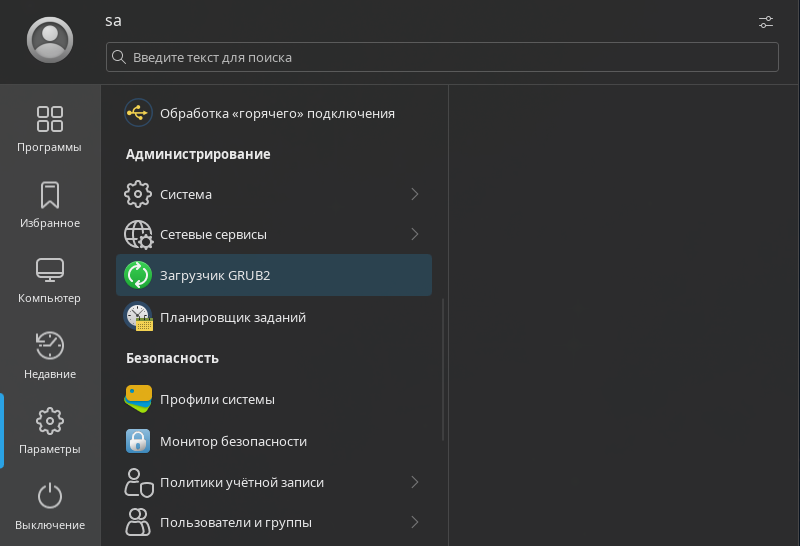
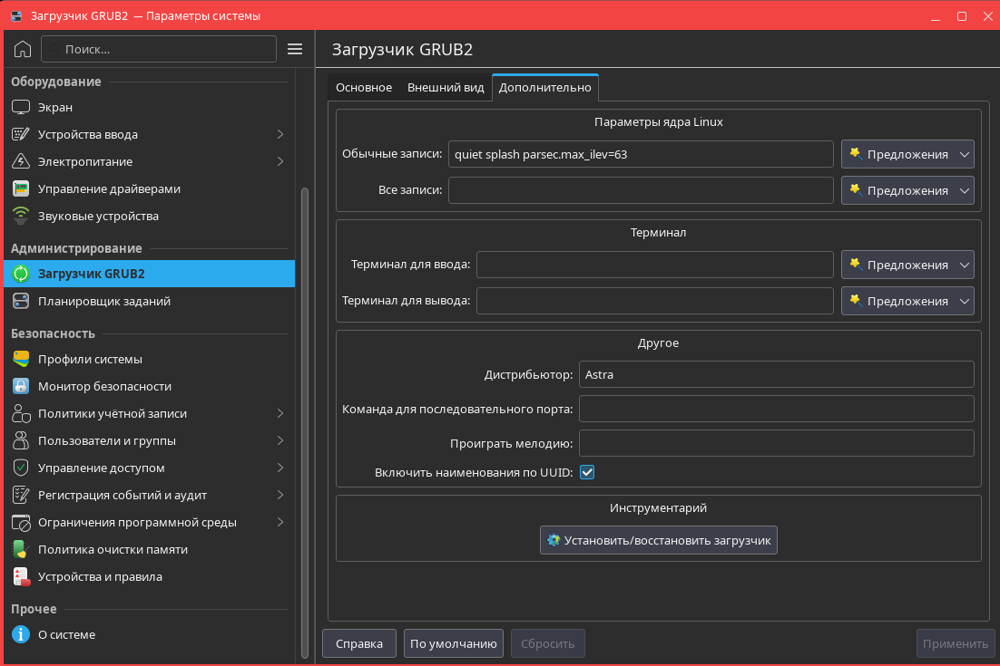
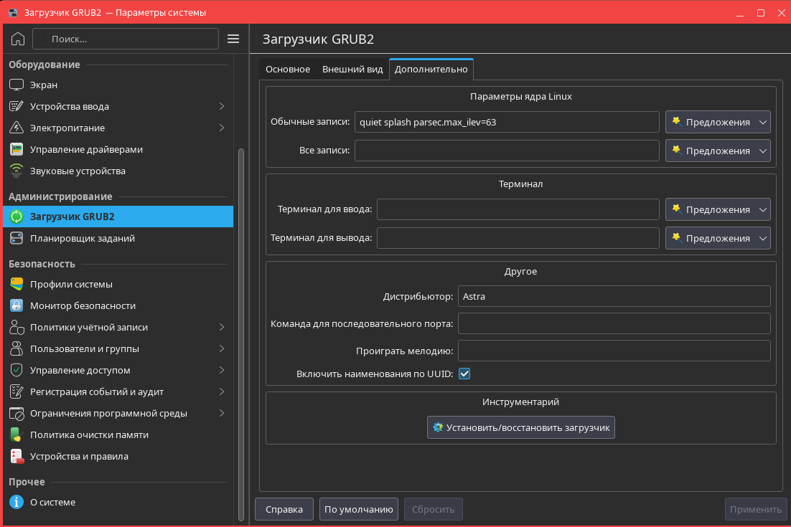
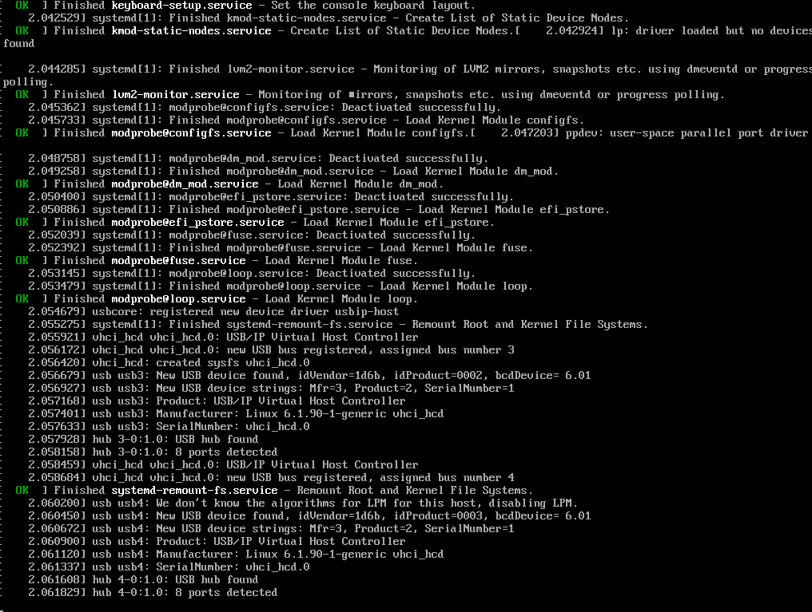

Модуль 3
Процесс загрузки ОС
Данный модуль содержит основные сведения о стадиях загрузки ОС. Вы ознакомитесь с загрузчиком ОС, его функциями и основными возможностями и настройки. Также в модуле рассматривается программа, которая позволяет управлять запуском системных и пользовательских служб.
Порядок загрузки ОС
При подаче питания процессор начинает выполнять код BIOS (Basic Input/Output System, в устаревших системах), либо UEFI (Unified Extensible Firmware Interface, в современных системах), который производит инициализацию оборудования и помещает в оперативную память загрузчик. Далее загружается программа-загрузчик из записи MBR (Master Boot Record, для BIOS) либо с EFI-раздела (для UEFI) загрузочного устройства. В современных системах семейства Linux в роли загрузчика обычно выступает GRUB2 (GRand Unified Bootloader).
Компоненты systemd
Основные компоненты systemd
- systemd — основная служба, управляет процессами пользовательского пространства, в частности службами
- юнит (unit) — основная единица systemd. Примерами юнитов являются службы, целевые состояния
Основные службы systemd
- systemd-journald — служба регистрации событий, тесно интегрированная с systemd. Регистрирует сообщения системного журнала (syslog), ядра (kernel log), сообщения службы, выводимые в стандартные потоки вывода и ввода
- systemd-networkd — служба управления сетевыми соединениями. Обнаруживает и настраивает сетевые соединения
- systemd-logind — служба, управляющая входом пользователей в систему, пользовательскими сеансами, созданием текстовых терминалов при активации виртуальной консоли, обработкой клавиш сна/выключения и рядом других связанных возможностей
- systemd-udevd — служба управления событиями устройств. Служба прослушивает события, поступающие от ядра, и реагирует на них: в частности, создает/удаляет файлы устройств в каталоге /dev при подключении или отключении соответствующих устройств
Unit-файлы
Конфигурационные файлы для systemd
Типы unit-файлов:
- служба (.service)
- целевое состояние (.target)
- путь (.path)
- таймер (.timer)
- монтирование (.mount) и автомонтирование (.automount)
- устройство (.device)
- подкачка (.swap)
Управление службами осуществляется с помощью программы Инициализация системы, которую можно запустить из меню Пуск — раздел Система группы Параметры.

В верхней части окна отображается главное меню, содержащее следующие пункты:
Настройка GRUB
Настройка GRUB производится с помощью графических инструментов или путём изменения файлов конфигурации.
Основной способ — раздел Загрузчик GRUB2 в параметрах системы. Перейти к нему можно с помощью соответствующего пункта меню Пуск в группе Параметры. Также в меню Пуск можно выбрать пункт Параметры системы, а затем выполнить переход. Для изменения параметров загрузчика потребуется ввести пароль администратора.
Программа содержит три вкладки:
- Запись по умолчанию — из списка устанавливается запись загрузки по умолчанию (позволяет выбрать версию ядра);
- флаг Следующая запись станет загружаемой по умолчанию — позволяет использовать выбранную при загрузке запись в дальнейшем по умолчанию;
- флаг Автоматически загружать запись по умолчанию — включает переключатели Немедленно и Через для установки автоматической загрузки записи по умолчанию, соответственно, сразу после показа меню загрузки или по истечении определенного времени. Справа от пункта Через в поле указывается количество секунд задержки;
- флаг Скрывать меню — позволяет скрыть меню при запуске. При выборе этого флага становится активным флаг Показывать обратный отсчет − для отображения таймера обратного отсчета. При этом в течение времени, указанного в поле Через, можно нажать клавишу Esc, что приведёт к остановке таймера и отображению меню;
- Язык — выпадающий список для установки языка сообщений;
- флаг Сгенерировать записи для восстановления — включает пункты меню для загрузки в режиме восстановления;
- флаг Проверка наличия операционных систем — включает проверку наличия операционных систем на других разделах дискового пространства.
 

Одним из пунктов меню является режим восстановления. В строке с таким пунктом будет указано (recovery mode).
Заключение
В материалах данного модуля рассмотрены стадии загрузки компьютера до момента готовности ОС к работе. Было озвучено, что в современных системах семейства Linux в роли многофункционального загрузчика обычно выступает GRUB2, который обеспечивает загрузку нескольких ОС. Также в модуле рассмотрены графические программы Инициализация системы и Загрузчик GRUB2. Первая позволяет управлять запуском системных и пользовательских юнитов, настраивать сеансы logind, конфигурировать таймеры и периодические работы, просматривать и изменять файлы конфигурации systemd. Вторая предназначена для настройки загрузчика GRUB2, которая позволяет избежать ручного редактирования файла grub.cfg с параметрами загрузчика системы.